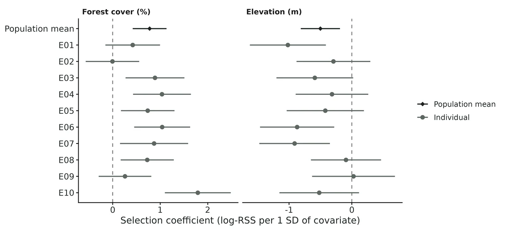
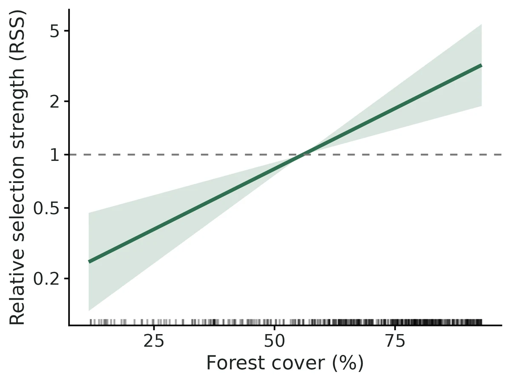
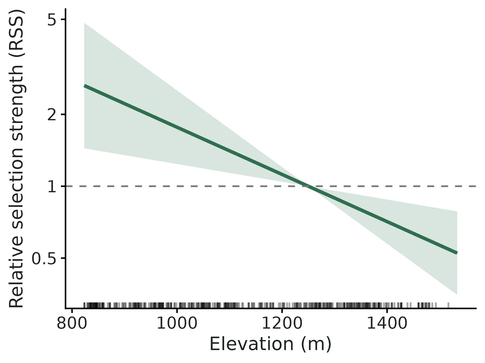
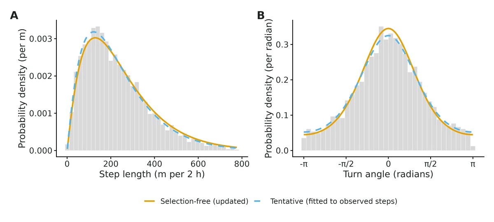

Habitat selection from telemetry - integrated step selection (iSSA), RSF and home ranges
"Do my collared elk select forest and avoid high elevation, how strongly, and do individuals differ?" An integrated step-selection analysis (iSSA; Avgar et al. 2016) compares each observed step (fix to fix) with steps the animal could have taken from the same start point, so availability changes with where the animal is. It returns:
Is this the right analysis?
Use it when
GPS (or other regular-interval) telemetry from several animals plus habitat rasters; the question is which habitats animals select or avoid while moving, how strongly (relative selection strength), how much individuals differ, what their movement kernel looks like (step lengths, turning) and how large their home ranges are.
Not for
Behavioural states / switching between encamped and travelling (use movement-hmm); very irregular or sparse fixes (> ~12 h apart, VHF triangulation) where steps lose meaning (use an RSF/home-range analysis alone); presence-only or survey data without individual tracks (use sdm-presence-only); categorical land-cover rasters (convert to proportion-of-class rasters, e.g. % forest within 100 m, first); migration or dispersal tracks that are not range-resident (iSSA still works with home_attraction false and home_range false, but home ranges are meaningless).
The data you need
GPS fix CSV (animal id, timestamp, projected x/y in metres, failed fixes allowed as empty rows) and one GeoTIFF per continuous habitat covariate in the same projected CRS.
What the example's main data file looks like:
| animal_id | timestamp | utm_e | utm_n | dop | fix_type |
|---|---|---|---|---|---|
| E01 | 2024-05-01 00:00:23 | 511014.9 | 5007670.1 | 4 | 3D |
| E01 | 2024-05-01 02:00:16 | 511255.5 | 5007538.4 | 2.3 | 3D |
| E01 | 2024-05-01 04:01:33 | 511324.1 | 5007658.1 | 1.4 | 3D |
| E01 | 2024-05-01 06:00:51 | 511293.8 | 5007932.5 | 1.7 | 3D |
| E01 | 2024-05-01 08:01:44 | 511092.4 | 5007911.8 | 2.5 | 3D |
Not sure? Use the finder to compare modules.
The worked example
Habitat selection of GPS-collared elk: integrated step-selection analysis (iSSA), RSF and home ranges (simulated example)
The question: Do elk select forest and avoid high elevation as they move, how strongly, do individual elk differ, and how large are their summer home ranges?
The data are simulated, so the true answer is known and the analysis can be checked against it.
What the researcher typed
I have GPS collar data from 10 elk (elk_gps_2024.csv, one row per fix attempt, fixes every 2 hours, coordinates in UTM zone 11N) and two habitat maps of my study area: forest_cover.tif (% canopy) and elevation.tif (m). Please tell me whether elk select forest and avoid high elevation as they move, how strong that is, whether individual elk differ, and how large their summer home ranges are.
Run it yourself
Download the example data below and unzip it.
Open the unzipped folder in Claude Code (see Install).
Paste the prompt above. The agent checks the files, writes a plan, runs planted truth, fits the model and writes the report. You can compare your results with the ones below.
Contains elk_gps_2024.csv, forest_cover.tif, elevation.tif, the settings file (config.yaml), a description of the data and a step-by-step walkthrough.
Study design details
| n animals | 10 |
|---|---|
| steps per animal | 540 |
| fix interval hours | 2 |
| fix attempts | 5410 |
| failed fixes | 410 |
| failed fix rate | 0.076 |
| used steps after regularisation | 3918 |
| available steps per used | 20 |
| covariates | forest cover (%), elevation (m) |
| landscape km | 16 x 16, 50-m cells, EPSG:32611 |
| time jitter s | 120 |
| simulation seed | 2024 |
| fix loss seed | 99 |
Results from the example data

What this means
- Elk selected locations with higher forest cover at the scale of one 2-h step (selection coefficient 0.78 per SD, 95% CI 0.42 to 1.13).
- Per 10 percentage points of forest cover, RSS = 1.37 (1.19 to 1.58).
- Elk avoided locations with higher elevation at the scale of one 2-h step (selection coefficient -0.50 per SD, 95% CI -0.81 to -0.19).
- Per 100 m of elevation, RSS = 0.80 (0.69 to 0.92).
- Individuals differ: the among-animal SD of the selection coefficient is 0.53 (95% CI 0.31 to 0.92) on the log-RSS scale per SD, so an estimated 93% of elk in this population would show positive selection (log-RSS > 0) for forest cover.
- The among-animal SD for elevation is 0.42 (95% CI 0.22 to 0.80), so an estimated 12% of elk in this population would show positive selection for elevation.
- After removing the effect of habitat selection, the selection-free step length has mean 245 m (95% CI 239 to 251) per 2 h; the turn-angle concentration is 1.02 (95% CI 0.96 to 1.07), i.e. directional persistence.
- Home ranges (95% AKDE, which accounts for autocorrelation): median 16.9 km^2 across 10 elk (range 4.4 to 49.5 km^2); median KDE 14.7 km^2 and MCP 11.6 km^2.
- These are associations between where animals stepped and the mapped covariates, conditional on what was reachable; they are not proof that the covariate causes the choice.
More figures



Figures are the module's default publication figures, reduced for the web. The report also saves them as PDF and full-resolution PNG.
Planted truth at the example's design
Before trusting the example's results, the module was run on many simulated data sets with the same design and known true values. Each row is one quantity: did the method get it back? (What the thresholds are.)
Every quantity the report interprets passed planted truth at this design. The 1 failing row in the table is a nuisance or descriptive quantity that the report does not interpret, or reports with a warning; the limits below say which.
| This example | 10 animals x 540 two-hour steps, 20 available steps per used step, forest and elevation |
|---|---|
| Design the module was validated at | 12 animals x 400 steps, 2-hour fixes, forest and elevation |
The example has fewer animals than the validated default (10 vs 12) but longer tracks (540 vs 400 steps). Population-mean selection and movement parameters depend mostly on total data and passed at the default; the among-animal spread (SD) of selection depends on the number of animals and was biased low with few animals (-20% to -26% with 4-8 animals in the power runs, -23% with 5 animals x 150 steps).
10 of 11 rows pass.
| Quantity | True value | Average estimate | Bias | Allowed bias | Coverage (needed) | Result |
|---|---|---|---|---|---|---|
| home_attraction_per_km2 | 0.25 | 0.294 | +17.6% | ±10.0% | 0.72 (0.904) | ✗ FAIL |
| rss_elevation_per_sd | 0.607 | 0.612 | +0.9% | ±10.0% | 0.94 (0.904) | ✓ PASS |
| rss_forest_per_sd | 2.23 | 2.23 | +0.0% | ±10.0% | 0.92 (0.904) | ✓ PASS |
| sel_elevation_mean | -0.5 | -0.5 | +0.0% | ±10.0% | 0.94 (0.904) | ✓ PASS |
| sel_elevation_sd | 0.3 | 0.294 | -1.9% | ±10.2%† | 0.97 (0.904) | ✓ PASS |
| sel_forest_mean | 0.8 | 0.791 | -1.1% | ±10.0% | 0.92 (0.904) | ✓ PASS |
| sel_forest_sd | 0.4 | 0.384 | -4.1% | ±10.0% | 0.97 (0.904) | ✓ PASS |
| step_mean_m | 240 | 240.3 | +0.1% | ±10.0% | 0.95 (0.904) | ✓ PASS |
| step_scale_m | 120 | 120.3 | +0.2% | ±10.0% | 0.93 (0.904) | ✓ PASS |
| step_shape | 2 | 2 | -0.0% | ±10.0% | 0.93 (0.904) | ✓ PASS |
| turn_kappa | 1 | 1 | +0.1% | ±10.0% | 0.95 (0.904) | ✓ PASS |
Limits that matter
- Home-attraction (range-residency) coefficient is overestimated (+18% at this design, coverage 0.72); it is a required nuisance term and is not interpreted.
- Among-animal SDs are imprecise with 10 animals and biased low with ~5; Wald intervals for an SD degenerate when the estimate is near zero.
- AKDE 95% intervals under-cover (0.85 in validation at ~13 effective range crossings; median 15 here), so home-range intervals are somewhat too narrow.
- Fix loss is assumed independent of habitat; habitat-biased fix loss (e.g. under dense canopy) would bias selection and was not validated.
- Only continuous, smooth covariates validated; categorical rasters and habitat-dependent movement not validated.
- The RSF is a comparison only: it estimates home-range-scale selection and its intervals are too narrow for autocorrelated GPS data.
- Power for weak effects is low: about 30+ animals needed for 80% power at -0.25 per SD with individual SD 0.3.
All known limits from the module's validation record
- Attraction coefficient is not recovered (
home_attraction_per_km2): +25% at 400 steps/animal (coverage 0.50), +6% at 1500 steps, +87% at 150 steps, but unbiased when the true centre is supplied, and not fixed by 2000 candidate steps in simulation (diag_nc2000) or REML. This is the small-sample bias of a mean-reversion rate when the mean (centre) is estimated from the same autocorrelated track. It is a nuisance term: the report gives it only qualitatively and says not to interpret its size. Including it is still necessary (omitting it fails the gate, section 4). - Among-animal SD with few animals: biased low (-20% to -26% with 4-8 animals in the power runs; -23% for forest with 5 animals x 150 steps). Its Wald interval (log scale) is degenerate when the estimate is near zero.
- AKDE interval coverage 0.85 at ~13 effective range crossings (bias -9%). Treat AKDE CIs as somewhat too narrow for short deployments.
- "Too few available steps" is not a failing control here: one available step per used step is unbiased (less precise). The negative controls that do fail are the RSF and the omitted range-residency term.
- Power for weak effects with individual variation is low (0.46 at 12 animals for -0.25 per SD with SD 0.3);
run.R powerat the researcher's design is advised. - Simulated landscapes only use continuous, smooth covariates; categorical rasters, habitat-dependent movement (speed or turning varying with habitat), interactions between movement and habitat, and habitat-biased fix loss are not validated.
- The RSF and UHC parts are comparison/diagnostic outputs; the RSF is shown to be biased for step-scale selection (section 4) and is not gated as an estimator of anything else.
How this module was validated
- 100 simulated datasets per design, fitted as integrated step-selection models with glmmTMB (REML); default design PASSED all 10 interpreted estimands (bias at most 3.1%, coverage 0.91-0.98), with the home-attraction nuisance term failing and not interpreted.
- Harder design (5 animals x 150 steps): 9/10 passed; the among-animal SD for forest was biased -23%.
- Negative controls failed as required: a resource selection function on the same autocorrelated tracks (elevation bias +40%, coverage 0.52) and omitting range residency (coverage 0.80-0.85).
- False-positive rate with no population elevation effect: 6 of 100 (nominal 5%).
- Power over 4-20 animals for a weak effect (-0.25 per SD): 0.29 to 0.64, so about 30+ animals would be needed for 80% power.
- Cross-checks: matched survival clogit and a hand-written likelihood, a two-step meta-analysis within one SE, and amt movement updates exactly; home-range AKDE intervals covered only 0.85.
- A separate verifier agent wrote an independent simulator (3 covariates, 16 animals x 300 steps, collar-style CSV) that passed all 13 interpreted estimands with a null false-positive rate of 0.05, and fixed silent data-entry problems; the RSF control failed 6/6 as required.
Every run uses the acceptance gate described on the validation page. The full record follows, section by section, exactly as kept in the module's VALIDATION.md.
Settings and pass/fail rule used for every run
All runs 2026-10-18/19, R 4.5.3 (amt, glmmTMB, survival, ctmm, adehabitatHR from Rlib/) on njobvu via bin/ejob with 16 cores. Reproduce with bash dev/movement-ssf/run_validation.sh (configs in modules/movement-ssf/validation/, outputs in results/movement-ssf/validation/<run>/, logs in logs/movement-ssf_*.log). Recovery uses fast_settings (no RSF, home ranges or UHC; the iSSA fit is identical to the full fit). Replicate r uses seed 100000 + r. Median 201 s per replicate at the default design.
Gate (core recovery_gate, unchanged): |bias| <= max(10% of |truth|, 3 MC SE); 95% coverage >= 0.95 - 3 MC SE (floor 0.80); >= 90% of replicates converged. "Converged" = glmmTMB convergence code 0, positive-definite Hessian and finite SEs. This is a likelihood module; there is no R-hat.
Simulation (simulate.R): 16 x 16 km landscape (50-m cells) with smooth forest-cover (%) and elevation (m) fields (forest partly negatively correlated with elevation). Each animal moves step by step: 200 candidate steps from Gamma(shape 2, scale 120 m) x von Mises(0, kappa 1) relative to the current heading; one is chosen with probability proportional to exp(beta_i' z(end) - 0.25 d^2), d = distance (km) to the animal's true range centre. beta_i ~ Normal(mu, sd) per covariate (mu = 0.8 forest, -0.5 elevation per landscape SD; sd = 0.4, 0.3). 2-h fixes, 5% failed fixes at random, 0-2 min time jitter, so the amt regularisation/burst code runs in every replicate. Default design: 12 animals x 400 steps.
Verdict
| design | reps (conv.) | result |
|---|---|---|
| default 12 animals x 400 steps (REML, estimated range centre) | 100 (100) | PASS all 10 interpreted estimands; home_attraction_per_km2 (nuisance, not interpreted) FAILS |
| false-positive control: elevation mean = 0 (SD 0.3) | 100 (100) | PASS all 10; rejection rate for elevation 0.06 |
| harder: 5 animals x 150 steps | 100 (99) | 9/10 PASS; sel_forest_sd bias -23% (MC SE 6%) |
| negative control: RSF (use vs MCP availability) on the same autocorrelated tracks | 100 (100) | FAILS as required: elevation mean bias +40%, coverage 0.52; elevation SD coverage 0.65 |
| negative control: omit range residency (fit without the attraction term) | 100 (100) | FAILS as required: elevation mean coverage 0.83, turning kappa coverage 0.80, mean step coverage 0.85 |
| 1 available step per used step | 100 (100) | passes (unbiased) but RMSE +10% to +85% and elevation power 0.81 vs 0.93 -- not a failing control, see below |
| power over n_animals (elevation mean -0.25), 50 reps each | 4 x 50 | power 0.29 / 0.48 / 0.46 / 0.64 at 4 / 8 / 12 / 20 animals |
| independent simulator (3 covariates, 16 animals x 300 steps, CSV read path; section 8) | 100 (99) | PASS all 13 interpreted estimands; null FP rate 0.05; RSF control fails 6/6 |
| home ranges: AKDE on simulated OUF tracks (45 days, 2-h fixes) | 100 | AKDE bias -9%, coverage 0.85 (below 0.885); KDE -24%, MCP -40% |
The iSSA part of the module is DONE at the default design for the selection means and SDs, RSS and the movement-kernel parameters. Not validated to the gate: the attraction coefficient (nuisance), the among-animal SD with ~5 animals, and AKDE interval coverage with short tracks (Known limits). No threshold was changed.
1. Default design
| estimand | truth | mean est | rel. bias | bias MC SE | coverage | power | gate |
|---|---|---|---|---|---|---|---|
| sel_forest_mean | 0.80 | 0.788 | -1.5% | 0.012 | 0.92 | 1.00 | PASS |
| sel_elevation_mean | -0.50 | -0.516 | -3.1% | 0.014 | 0.91 | 0.93 | PASS |
| sel_forest_sd | 0.40 | 0.391 | -2.3% | 0.011 | 0.98 | PASS | |
| sel_elevation_sd | 0.30 | 0.291 | -2.9% | 0.014 | 0.96 | PASS | |
| rss_forest_per_sd | 2.226 | 2.216 | -0.4% | 0.027 | 0.92 | PASS | |
| rss_elevation_per_sd | 0.607 | 0.603 | -0.5% | 0.009 | 0.91 | PASS | |
| step_shape | 2.00 | 2.007 | +0.3% | 0.004 | 0.97 | PASS | |
| step_scale_m | 120 | 119.8 | -0.2% | 0.30 | 0.97 | PASS | |
| step_mean_m | 240 | 240.3 | +0.1% | 0.30 | 0.95 | PASS | |
| turn_kappa | 1.00 | 0.999 | -0.1% | 0.003 | 0.98 | PASS | |
| home_attraction_per_km2 (nuisance) | 0.25 | 0.312 | +24.8% | 0.003 | 0.50 | FAIL |
Why REML is the default. The first full run used ML (glmmTMB default; archived dev/movement-ssf/recover_default_ML_estcentre.log): the means and movement parameters passed, but sel_elevation_sd was 0.200 (rel. bias -33%) and sel_forest_sd -9%. Diagnostics (32 reps each, dev/movement-ssf/diag_*.log): ML without any attraction in simulation or fit still gave -15% (elevation SD), so this is the usual downward bias of ML variance components with 12 groups plus many fixed effects (the per-animal centre terms), and REML (reml: true) removed it (-11% on 32 reps, -2.9% on the 100-rep run above).
Wald intervals for the SDs. The interval is built on the log-SD scale. When the SD estimate is near zero the upper limit explodes (in 9% of default replicates the elevation-SD upper limit exceeded 10; mean interval widths in the summary CSV are therefore astronomically large; median width 0.68). These degenerate intervals count as "covering" in the coverage figure. Read an SD whose interval runs to very large values as "not estimable from these animals".
2. False-positive rate
Elevation population mean 0 (individual SD 0.3 retained, so some animals select and some avoid). The 95% interval for sel_elevation_mean excluded 0 in 6/100 replicates (nominal 5%); mean estimate -0.015 (MC SE 0.013); coverage 0.94. All other estimands passed.
3. Harder design: 5 animals x 150 steps
99/100 converged. Means: forest -2.5% bias, coverage 0.90; elevation +4.7%, coverage 0.93 (power only 0.28 for -0.5). sel_forest_sd 0.306 vs 0.40 (-23%, MC SE 0.022) FAIL; sel_elevation_sd passed (+5%) but its RMSE (0.39) exceeds the truth. Attraction +87%. With ~5 animals, report individual coefficients and treat the SD as rough (fit() writes a note).
4. Negative controls
- RSF on autocorrelated GPS data (
negctrl_rsf/,method: rsf): use-availability logistic model (10 available points per fix in each animal's MCP, weight 5000, random slopes) reported under the iSSA names. Elevation mean -0.298 vs -0.5 (bias +40%), coverage 0.52; elevation SD 0.417 vs 0.3, coverage 0.65. Forest passed by chance (bias -5%, coverage 0.91): the RSF estimates home-range-scale selection, which here differs from step-scale selection mainly for the broad-scale covariate (elevation). The gate fails, as it must. - Omitting range residency (
negctrl_no_attraction/,home_attraction: falseon data with attraction): elevation mean coverage 0.83, turning kappa -3% with coverage 0.80, mean step coverage 0.85 -> 4 estimands FAIL. - One available step per used step (
negctrl_one_control/): the conditional logit is still consistent with one control, so this does not fail the gate (all 10 interpreted estimands pass); it costs efficiency: RMSE of the elevation mean 0.185 vs 0.144, forest mean 0.137 vs 0.125, mean step 5.6 vs 3.0 m, and power for the elevation mean falls from 0.93 to 0.81. Recorded honestly: "too few available steps" is a precision problem, not a bias problem, in this model. - ML-era plug-in centre (archived
dev/movement-ssf/recover_plugin_ML.log): using each animal's mean location as a fixed centre (home_centre: mean) biased the elevation mean by +18% (coverage 0.73), because the mean location is pulled toward preferred habitat. This is why the centre is estimated (home_centre: estimated, default).
5. Power
| animals | power, elevation (-0.25) | coverage | power, forest (0.8) | coverage | elevation-SD rel. bias |
|---|---|---|---|---|---|
| 4 | 0.29 | 0.94 | 0.96 | 0.86 | -20% |
| 8 | 0.48 | 0.88 | 1.00 | 0.98 | -26% |
| 12 | 0.46 | 0.90 | 1.00 | 0.90 | -13% |
| 20 | 0.64 | 0.96 | 1.00 | 0.92 | +1% |
With individual SD 0.3 comparable to a weak mean effect (-0.25), power is driven by the number of animals, not steps; ~30+ animals would be needed for 80% power. Coverage of the means stays near nominal (MC SE ~0.03 at 50 reps).
6. Home ranges
100 isotropic OUF tracks (ctmm::simulate; sigma^2 = 8e5 m^2, position autocorrelation 3 days, velocity 2 h), 45 days of 2-h fixes; true 95% area 15.06 km^2. AKDE (ctmm.select + akde): mean 13.67 km^2 (rel. bias -9.2%), 95% CI coverage 0.85 (below the 0.885 bound), median effective sample size 13.5, 0 failures. KDE (reference bandwidth, amt) -24%, MCP -40%. AKDE is far better than KDE/MCP but its interval under-covers at ~13 effective range crossings.
7. Cross-checks
- Likelihood engine. Fixed-effects glmmTMB Poisson formulation vs
survival::clogit(exact) vs a hand-written conditional-logit likelihood maximised withoptim: max |glmmTMB - clogit| = 5.5e-4 (coefficients ~0.03-0.75, SEs agree to 4 digits); max |optim - clogit| = 2.1e-6. - Random slopes. Population mean / SD from glmmTMB (ML) vs two-step approach (per-animal clogit + DerSimonian-Laird random-effects meta-analysis): forest mean 0.881 vs 0.885, SD 0.439 vs 0.397; elevation mean -0.221 vs -0.208, SD 0.302 vs 0.334 (agree within one SE ~0.13).
- Movement updates. Module vs
amt::update_gamma/amt::update_vonmises: shape 2.02812 vs 2.02812, scale 113.8449 vs 113.8449 m, kappa 0.91898 vs 0.91898 (identical). - KDE area. amt
hr_kdevs adehabitatHRkernelUD(h = "href"), 95% area of one animal: 16.11 vs 16.32 km^2 (1.3%, different grid/extent). - Attraction term with the true centre (
dev/movement-ssf/att_test.R, 8 datasets, 12 animals x 1500 steps, no habitat selection): clogit with the true squared distance 0.250 (truth 0.25); with the estimated centre 0.266; with the mean-location centre 0.265. The implementation is right; the bias comes from estimating the centre.
8. Independent verification
A second simulator written without any module code (verify/indep_sim.R): terra landscapes (40-m cells) with THREE covariates (shrub %, slope deg, NDVI), an inverse-CDF von Mises sampler, Gamma(1.5, 200 m) steps, kappa 0.5, attraction 0.15 /km^2, 16 animals x 300 steps, 3-h schedule, 10% failed fixes kept as empty rows, 0-5 min jitter, collar-style CSV with different column names and a dd/mm/yyyy time format read back through the module's read_data() (the real-data path).
| run | reps (ok) | result |
|---|---|---|
| default (mu shrub 0.6, slope -0.4, NDVI 0.3; SD 0.3/0.2/0.25) | 100 (99 converged; 1 failed the Hessian/convergence check) | all 13 interpreted estimands PASS (bias -4.3% to +1.5%, coverage 0.90-0.97; slope SD -13.7%, within 3 MC SE); attraction +42%, coverage 0.29 FAIL (Known limit 1) |
| null (shrub mean 0) | 100 (99) | all 13 PASS; false-positive rate for shrub 5/99 = 0.05 |
RSF negative control (method: rsf) | 100 (100) | all 6 FAIL (SDs +35% to +87%, slope SD coverage 0.18; means coverage 0.87-0.88) |
rerun of the default validation config (verify/rerun_default) | 100 (100) | identical to section 1 to all printed digits (deterministic seeds) |
Messy-data intake (verify/messy_test.R, verify/messy_applied.R): eight corrupted copies of the example CSV. The verifier found that ids with different spellings ("E3" vs "E03", "e05 " vs "E05"), rows with no id, and coordinates written as "511,014.9" were silently dropped or treated as separate animals. The fix (applied 2026-10-19; pre-fix copies in dev/movement-ssf/pre_verify_backup/) makes check_data() flag all of them, and it names the animal whose coordinates are off the raster (wrong CRS for one collar). Wrong column names and unreadable timestamps stop with a message that says what to set. Duplicated fixes were already flagged. The same patch added wording to the report: a fix-success / habitat-biased fix-loss caveat, the AKDE coverage caveat from section 6, and "higher" instead of "more" for non-percentage covariates. It also themes the movement-kernel figure. None of these changes touch the fitting code (engine.R and simulate.R are unchanged), so the recovery results above still apply.
Continuation (2026-10-19, after a session restart). These checks were added to the work above.
- The logs (
logs/movement-ssf_verify_indep_{default,null,rsf}.log) were re-read, and the numbers in the table above match them. The patched files inverify/patched/are byte-identical to the installed module.engine.R(01:32) predates every recovery run. Literature check of
engine.Rline by line:- The stratum intercept SD is fixed at 1e3 (variance 1e6), with independent
(0 + z | id)slopes (Muff et al. 2020). - Gamma update: shape + beta_log(sl); rate 1/scale - beta_sl, where beta_sl is converted from per-km to per-m.
- von Mises update: kappa + beta_cos(ta) (Avgar et al. 2016; Fieberg et al. 2021, Appendix).
- Delta-method gradients for scale and mean.
- RSS: exp(beta Delta z), per unit via unit/SD (Avgar et al. 2017).
- The attraction expansion -a|x-c|^2 into home_d2 plus id:hx and id:hy terms.
- RSF weight 5000.
- UHC draws. All are correct.
simulate()andfit()share onlyssf_lookup(). The independent terra simulator (cellFromXY, GeoTIFFs read throughread_data()) rules out cancelling lookup bugs.
- The stratum intercept SD is fixed at 1e3 (variance 1e6), with independent
Example report checked against the estimates table:
- Per-unit RSS: exp(0.777 x 10/24.7) = 1.37 and exp(-0.501 x 100/220) = 0.80.
- Share of animals selecting: Phi(0.777/0.533) = 93% and Phi(-0.501/0.420) = 12%.
- Fix loss: 410/5410 = 8%.
- Median AKDE: (16.71 + 17.01)/2 = 16.9 km^2.
- The RSS curve is consistent with the coefficient: RSS of about 3.2 at 93% forest and about 0.25 at 11%.
- Wording is associational, with the fix-loss caveat that separates detection from behaviour.
- Fix: the RSS curves are relative to the landscape-average covariate value, but core
report.Rdoes not embed figure captions, so the main report never said what the reference was. That was only infigures/gallery.html.output.Rnow adds one sentence per covariate that gives the reference value (e.g. 55.9% forest, 1250 m) and says the curve is for a typical animal on a log scale. The example was refit (logs/movement-ssf_verify2_example.log) and the estimates are unchanged. No fitting code was touched. Not fixed (core, not blocking):
- The report's "Reproduce" line says
Rscript core/run.R .... On this cluster it should bebin/Rscript. - Figure captions are not shown in the main HTML report for any module.
- The report's "Reproduce" line says
Engine, references and full details
Engine: amt (track regularisation, steps, available steps), glmmTMB (Poisson formulation of the mixed conditional logistic model, Muff et al. 2020), ctmm (AKDE), amt (KDE, MCP).
References
- Avgar T, Potts JR, Lewis MA, Boyce MS (2016) Integrated step selection analysis: bridging the gap between resource selection and animal movement. Methods in Ecology and Evolution 7:619-630.
- Avgar T, Lele SR, Keim JL, Boyce MS (2017) Relative selection strength: quantifying effect size in habitat- and step-selection inference. Ecology and Evolution 7:5322-5330.
- Fieberg J, Signer J, Smith B, Avgar T (2021) A 'How to' guide for interpreting parameters in habitat-selection analyses. Journal of Animal Ecology 90:1027-1043.
- Muff S, Signer J, Fieberg J (2020) Accounting for individual-specific variation in habitat-selection studies: efficient estimation of mixed-effects models using Bayesian or frequentist computation. Journal of Animal Ecology 89:80-92.
- Signer J, Fieberg J, Avgar T (2019) Animal movement tools (amt): R package for managing tracking data and conducting habitat selection analyses. Ecology and Evolution 9:880-890.
- Signer J, Fieberg J, Avgar T (2017) Estimating utilization distributions from fitted step-selection functions. Ecosphere 8:e01771.
- Fieberg JR, Forester JD, Street GM, Johnson DH, ArchMiller AA, Matthiopoulos J (2018) Used-habitat calibration plots. Ecography 41:737-752.
- Fleming CH, Fagan WF, Mueller T, Olson KA, Leimgruber P, Calabrese JM (2015) Rigorous home range estimation with movement data: a new autocorrelated kernel density estimator. Ecology 96:1182-1188.
- Calabrese JM, Fleming CH, Gurarie E (2016) ctmm: an R package for analyzing animal relocation data as a continuous-time stochastic process. Methods in Ecology and Evolution 7:1124-1132.
- Brooks ME et al. (2017) glmmTMB balances speed and flexibility among packages for zero-inflated generalized linear mixed modeling. The R Journal 9:378-400.
- Fortin D et al. (2005) Wolves influence elk movements: behavior shapes a trophic cascade in Yellowstone National Park. Ecology 86:1320-1330.